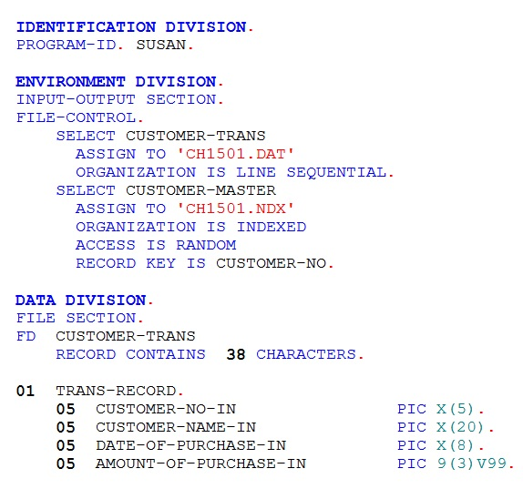
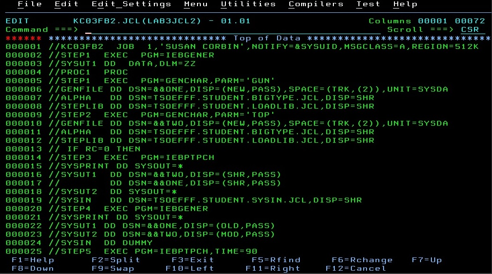

I have completed several websites for clients in the Toronto area. They range from aerial photographers to restaurants and even a culinary school. My work on these websites included copywriting and logo design. As a result of this work I would be interested in a position as a web designer and feel that I would be of great assistance in that regard.


At Georgian College I have taken courses in COBOL, Assembler and JCL. These courses are used in mainframe programming. I found them very interesting and challenging. The COBOL was especially of interest to me. I found it very fun to do. A position as a mainframe programmer would also be something that I would be interested in pursuing.
I have also taken two courses in Java programming. Java is an integral part of many of the technologies that we use today such as laptops, game consoles and of course the games that go with them, cell phones and the Internet. With this in mind I think a job in the java programming field would be a great way to get into an ever growing field where there seems to be limitless possibilities.